02 / CURATORIAL PROJECT
二十四番衣色
TWENTY-FOUR SOLAR TERMS OF ATTIRE今潮新韵 · 旗遇东方
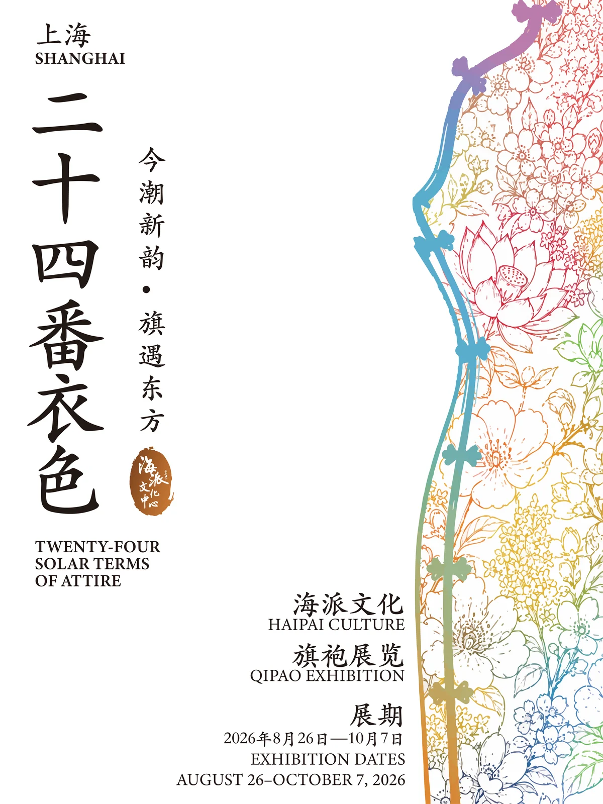
策展叙事 / CURATORIAL NARRATIVE
展览以二十四节气为时间线索，将空间划分为春、夏、秋、冬四个章节。四季中的自然变化，被转译为服装中的色彩、面料、纹样与工艺；与此同时，展览也沿着材料与制作过程展开，从桑蚕丝、盘扣，到织绣、漳缎与药斑布，逐步呈现一件衣服如何生成。
一条线讲衣色从何而来，
一条线讲衣裳如何被做成。
自然、时间与手工艺在同一条展览动线中交汇，最终构成“二十四番衣色”的完整叙事。
- 春生发
- 夏盛放
- 秋收成
- 冬藏
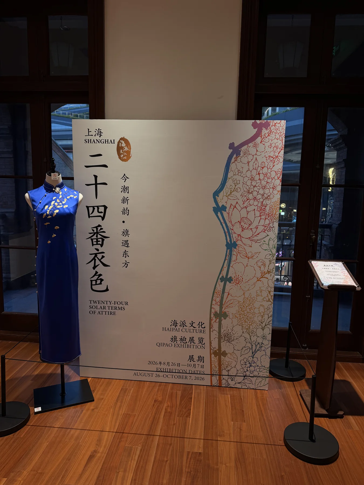
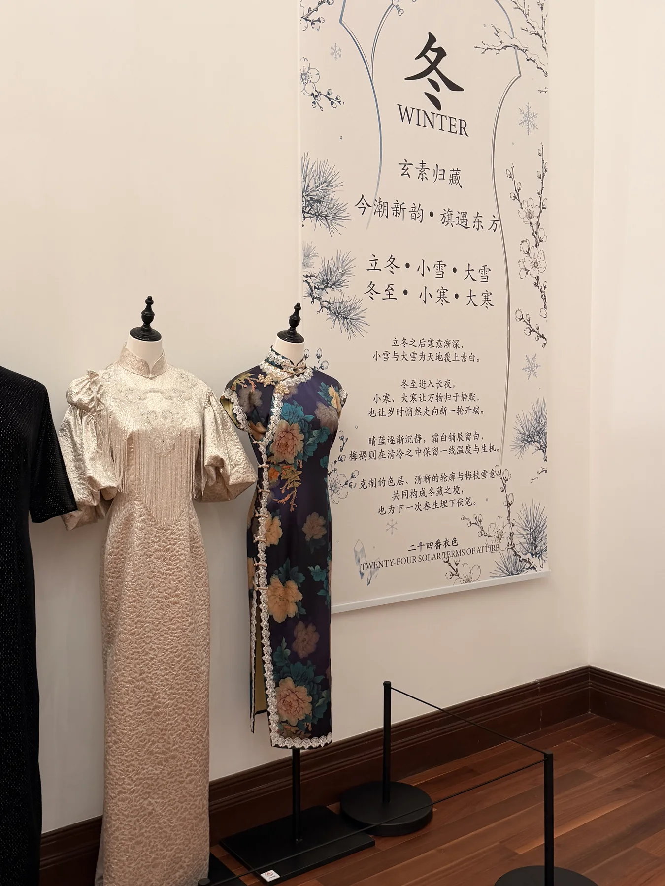
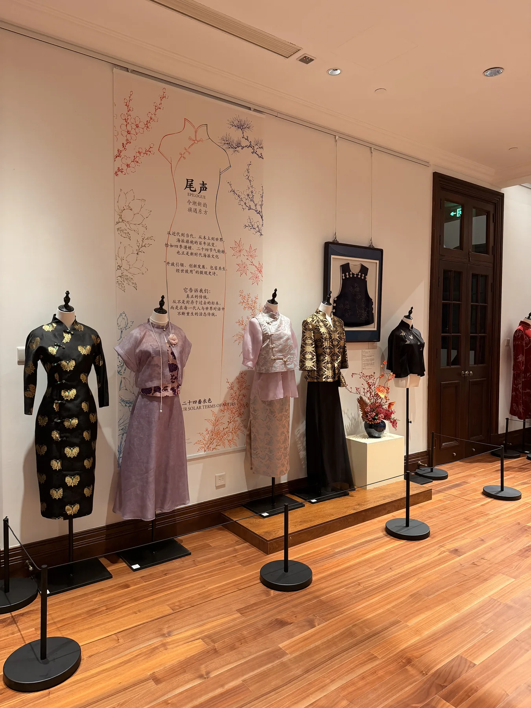
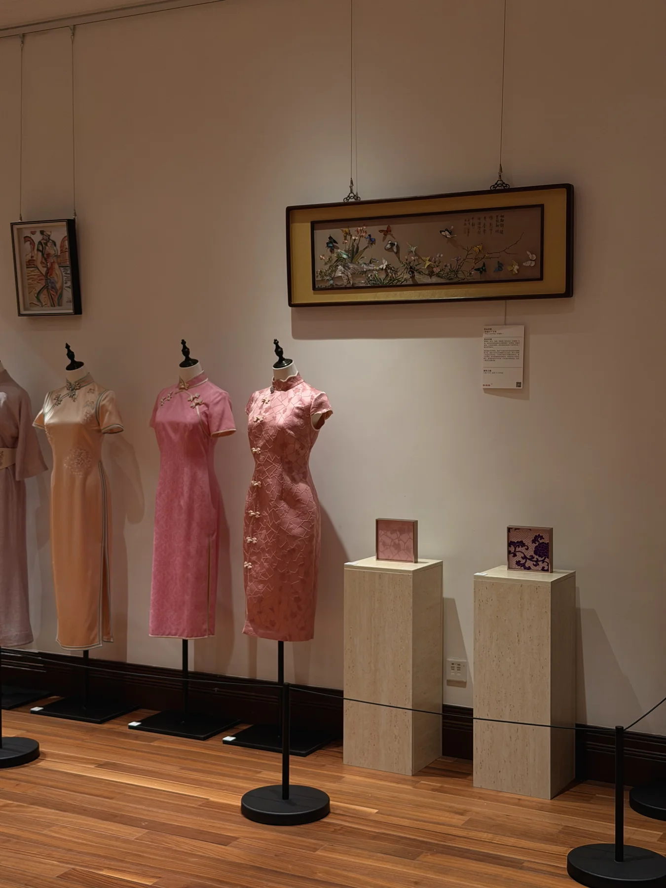
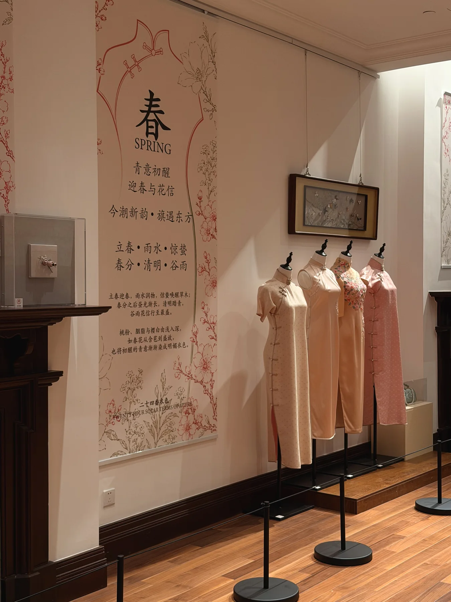
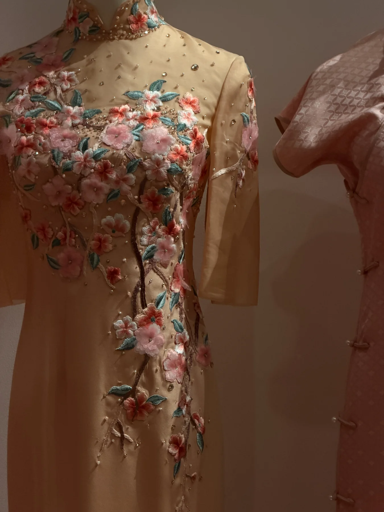
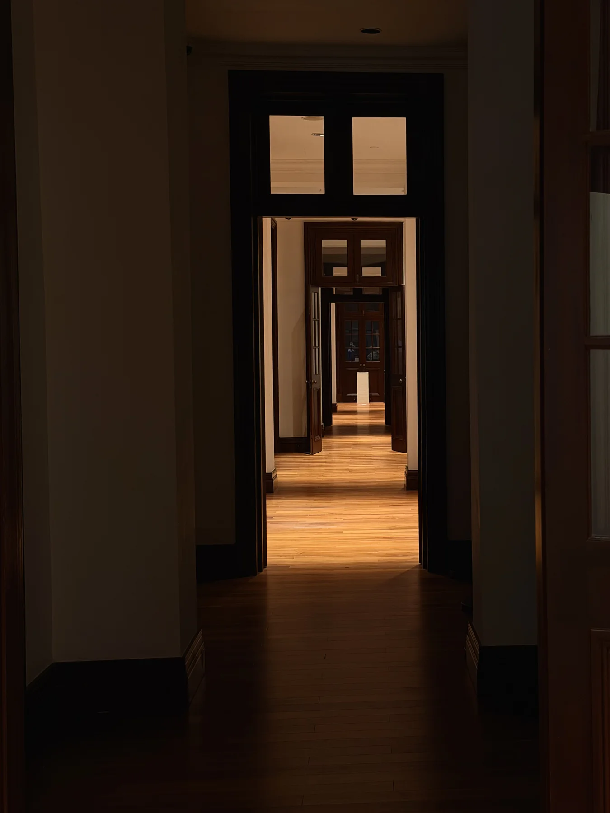
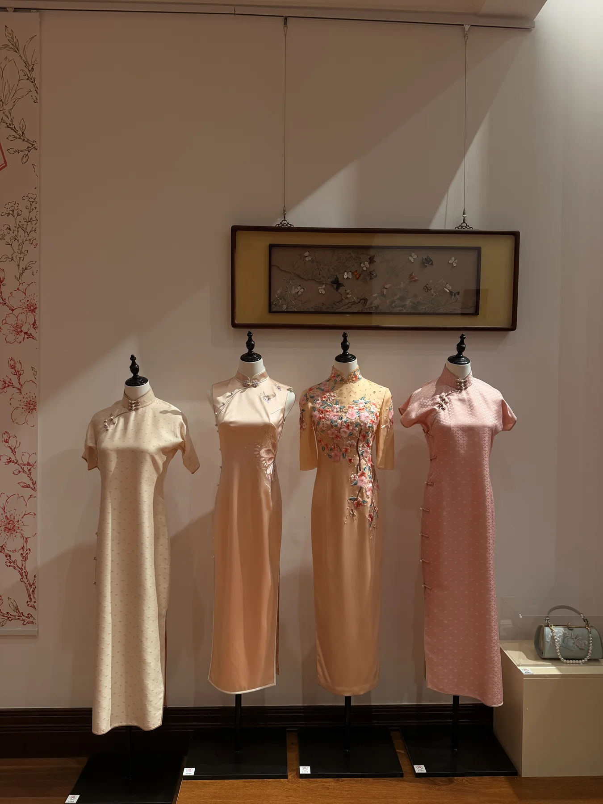
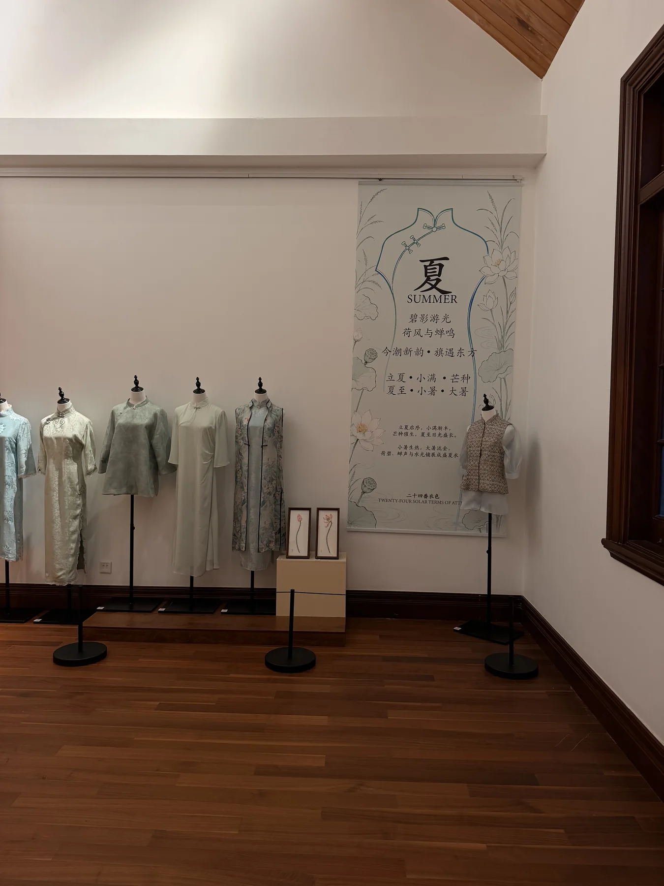
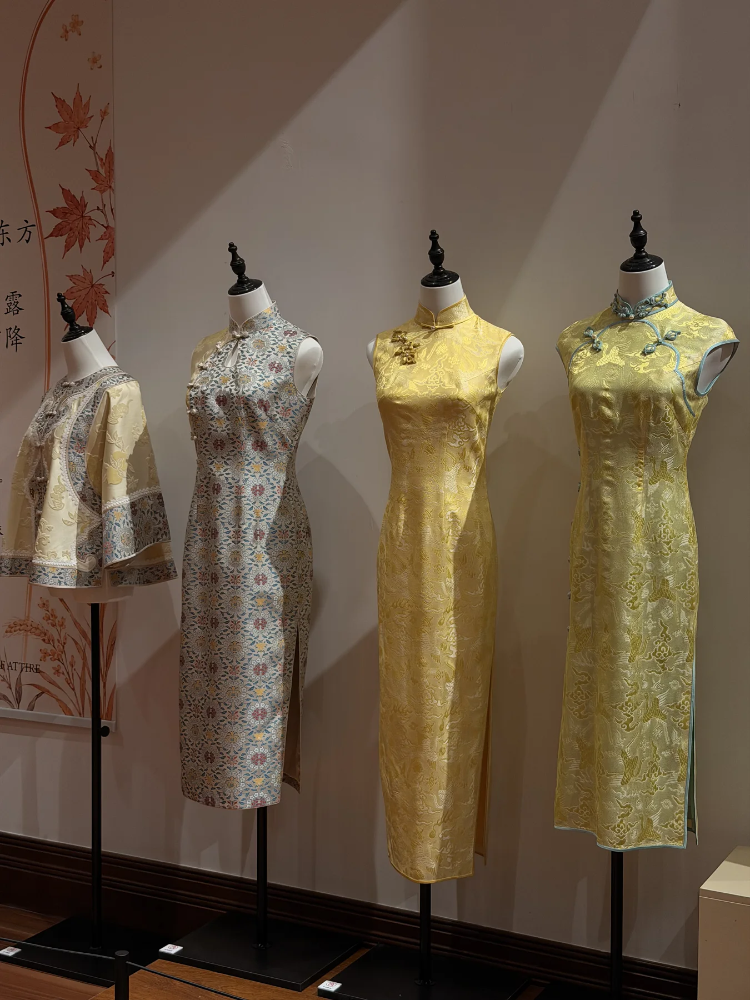
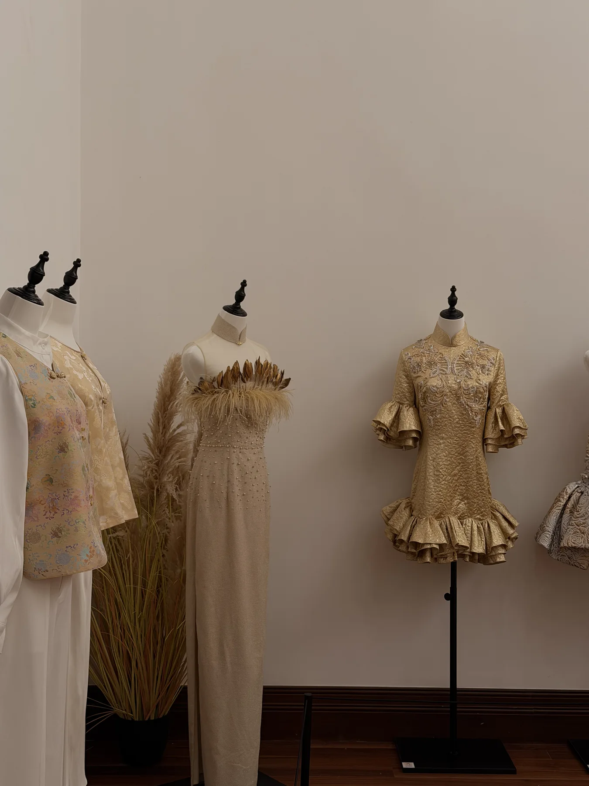
参展品牌与创作者 / PARTICIPANTS
海派工艺，在当代衣裳中继续生长。
华福汇及绣中绣艺术工作室、江南绣织局非遗织绣艺术工作室，以独幅旗袍、传统织绣及跨界工艺呈现手工艺的当代表达。
上海服装（集团）有限公司 / T&A 天嘉爱、镜泊秦汉、蔓楼兰，从东方审美与中式服饰结构出发，连接城市生活、苏绣、盘扣与高级定制工艺。
安亭药斑布非遗工坊 / 胡不花与琴馨怡，让传统蓝白印染、汉字与银杏等东方元素成为当代服装的纹样与面料语言。
桑蚕丝 · 漳缎 · 非遗盘扣 · 传统织绣 · 独幅旗袍制作 · 药斑布印染